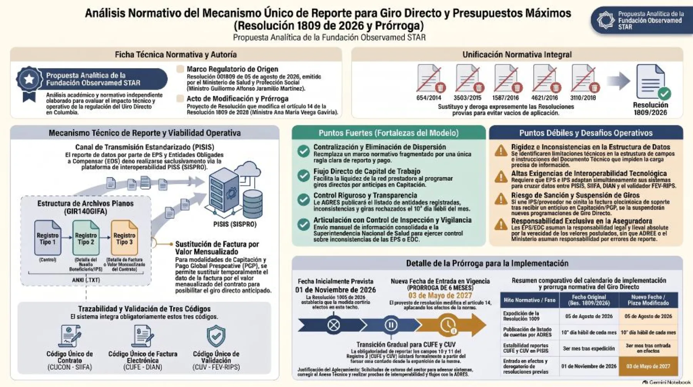

Direct payment (giro directo) and maximum budgets (presupuestos máximos): Resolution 1809 of 2026 and its extension

Resolution 1809 of August 5, 2026 of the Ministry of Health and Social Protection creates a single reporting mechanism for direct payment (giro directo) and maximum budgets (presupuestos máximos). It unifies and repeals Resolutions 654 of 2014, 3503 of 2015, 1587 of 2016, 4621 of 2016 and 3110 of 2018.
A draft resolution amends its article 14 and postpones its entry into force by six months: from November 1, 2026 to May 3, 2027.
EPS and entities obliged to compensate will report through the PISIS platform (SISPRO), in flat files with three record types, and each payment must carry three codes: the contract code (CUCON, SIIFA), the electronic invoice code (CUFE, DIAN) and the validation code (CUV, FEV-RIPS).
Strengths the analysis identifies: it centralizes a previously scattered framework, provides a direct flow of resources to the provider network, ADRES will publish the list of rejected entities and payments, and it is coordinated with the National Health Superintendency (Supersalud) for oversight.
Weaknesses: technical limitations in the data structure, high interoperability requirements (PISIS, SIIFA, DIAN, FEV-RIPS), risk of payment suspension when the electronic invoice is missing, and the insurer's sole responsibility for reporting errors.